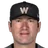
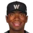
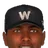
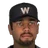
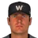
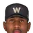

Franchise record book · MLB
Washington Cherry Blossoms
Seasons covered: 2002–2002. Only games played for this franchise count.
This club has no pre-2002 history in the export, so its record book is the 2002 season to date. Rate records need 3.1 PA or 1 inning per team game.
Home runs
| # | Player | Season | Team | Home runs |
|---|---|---|---|---|
| #1 | Jose Hernandez • | 2002 (MLB) |  Washington Cherry Blossoms Washington Cherry Blossoms | 8 |
| #2 | Travis Hafner • | 2002 (MLB) | Washington Cherry Blossoms | 7 |
| #3 | 2002 (MLB) | Washington Cherry Blossoms | 7 | |
| #4 | 2002 (MLB) | Washington Cherry Blossoms | 5 | |
| #5 | 2002 (MLB) | Washington Cherry Blossoms | 4 | |
| #6 | Mark Kotsay • | 2002 (MLB) | Washington Cherry Blossoms | 4 |
| #7 |  Chad Mottola • | 2002 (MLB) | Washington Cherry Blossoms | 3 |
| #8 |  Endy Chavez • | 2002 (MLB) | Washington Cherry Blossoms | 3 |
| #9 | Damion Easley • | 2002 (MLB) | Washington Cherry Blossoms | 3 |
| #10 | Marlon Anderson • | 2002 (MLB) | Washington Cherry Blossoms | 2 |
Hits
| # | Player | Season | Team | Hits |
|---|---|---|---|---|
| #1 | Marlon Anderson • | 2002 (MLB) | Washington Cherry Blossoms | 51 |
| #2 | Mark Kotsay • | 2002 (MLB) | Washington Cherry Blossoms | 50 |
| #3 | 2002 (MLB) | Washington Cherry Blossoms | 46 | |
| #4 | Travis Hafner • | 2002 (MLB) | Washington Cherry Blossoms | 45 |
| #5 | Jose Hernandez • | 2002 (MLB) | Washington Cherry Blossoms | 42 |
| #6 | Damion Easley • | 2002 (MLB) | Washington Cherry Blossoms | 41 |
| #7 | 2002 (MLB) | Washington Cherry Blossoms | 34 | |
| #8 | 2002 (MLB) | Washington Cherry Blossoms | 31 | |
| #9 | Endy Chavez • | 2002 (MLB) | Washington Cherry Blossoms | 30 |
| #10 | Chad Mottola • | 2002 (MLB) | Washington Cherry Blossoms | 15 |
RBI
| # | Player | Season | Team | RBI |
|---|---|---|---|---|
| #1 | Damion Easley • | 2002 (MLB) | Washington Cherry Blossoms | 28 |
| #2 | 2002 (MLB) | Washington Cherry Blossoms | 21 | |
| #3 | 2002 (MLB) | Washington Cherry Blossoms | 20 | |
| #4 | 2002 (MLB) | Washington Cherry Blossoms | 19 | |
| #5 | Marlon Anderson • | 2002 (MLB) | Washington Cherry Blossoms | 17 |
| #6 | Travis Hafner • | 2002 (MLB) | Washington Cherry Blossoms | 17 |
| #7 | Jose Hernandez • | 2002 (MLB) | Washington Cherry Blossoms | 16 |
| #8 | Endy Chavez • | 2002 (MLB) | Washington Cherry Blossoms | 14 |
| #9 | Mark Kotsay • | 2002 (MLB) | Washington Cherry Blossoms | 12 |
| #10 | Chad Mottola • | 2002 (MLB) | Washington Cherry Blossoms | 8 |
Runs
| # | Player | Season | Team | Runs |
|---|---|---|---|---|
| #1 | Travis Hafner • | 2002 (MLB) | Washington Cherry Blossoms | 29 |
| #2 | 2002 (MLB) | Washington Cherry Blossoms | 26 | |
| #3 | 2002 (MLB) | Washington Cherry Blossoms | 22 | |
| #4 | Jose Hernandez • | 2002 (MLB) | Washington Cherry Blossoms | 22 |
| #5 | Mark Kotsay • | 2002 (MLB) | Washington Cherry Blossoms | 19 |
| #6 | Marlon Anderson • | 2002 (MLB) | Washington Cherry Blossoms | 18 |
| #7 | 2002 (MLB) | Washington Cherry Blossoms | 18 | |
| #8 | Endy Chavez • | 2002 (MLB) | Washington Cherry Blossoms | 12 |
| #9 | Damion Easley • | 2002 (MLB) | Washington Cherry Blossoms | 12 |
| #10 | Chad Mottola • | 2002 (MLB) | Washington Cherry Blossoms | 5 |
Stolen bases
| # | Player | Season | Team | Stolen bases |
|---|---|---|---|---|
| #1 | Endy Chavez • | 2002 (MLB) | Washington Cherry Blossoms | 5 |
| #2 | 2002 (MLB) | Washington Cherry Blossoms | 4 | |
| #3 | Flavio Romero • | 2002 (MLB) | Washington Cherry Blossoms | 3 |
| #4 | Marlon Anderson • | 2002 (MLB) | Washington Cherry Blossoms | 2 |
| #5 | Chad Mottola • | 2002 (MLB) | Washington Cherry Blossoms | 1 |
| #6 | Travis Hafner • | 2002 (MLB) | Washington Cherry Blossoms | 1 |
| #7 | Jose Hernandez • | 2002 (MLB) | Washington Cherry Blossoms | 1 |
| #8 | Mark Kotsay • | 2002 (MLB) | Washington Cherry Blossoms | 1 |
| #9 | 2002 (MLB) | Washington Cherry Blossoms | 0 | |
| #10 | 2002 (MLB) | Washington Cherry Blossoms | 0 |
Doubles
| # | Player | Season | Team | Doubles |
|---|---|---|---|---|
| #1 | Marlon Anderson • | 2002 (MLB) | Washington Cherry Blossoms | 17 |
| #2 | 2002 (MLB) | Washington Cherry Blossoms | 14 | |
| #3 | Travis Hafner • | 2002 (MLB) | Washington Cherry Blossoms | 13 |
| #4 | Jose Hernandez • | 2002 (MLB) | Washington Cherry Blossoms | 12 |
| #5 | 2002 (MLB) | Washington Cherry Blossoms | 9 | |
| #6 | Damion Easley • | 2002 (MLB) | Washington Cherry Blossoms | 8 |
| #7 | Mark Kotsay • | 2002 (MLB) | Washington Cherry Blossoms | 7 |
| #8 | 2002 (MLB) | Washington Cherry Blossoms | 6 | |
| #9 | Endy Chavez • | 2002 (MLB) | Washington Cherry Blossoms | 4 |
| #10 | Flavio Romero • | 2002 (MLB) | Washington Cherry Blossoms | 3 |
Triples
| # | Player | Season | Team | Triples |
|---|---|---|---|---|
| #1 | 2002 (MLB) | Washington Cherry Blossoms | 3 | |
| #2 | Chad Mottola • | 2002 (MLB) | Washington Cherry Blossoms | 1 |
| #3 | 2002 (MLB) | Washington Cherry Blossoms | 1 | |
| #4 | Jose Hernandez • | 2002 (MLB) | Washington Cherry Blossoms | 1 |
| #5 | Marlon Anderson • | 2002 (MLB) | Washington Cherry Blossoms | 0 |
| #6 | 2002 (MLB) | Washington Cherry Blossoms | 0 | |
| #7 | Travis Hafner • | 2002 (MLB) | Washington Cherry Blossoms | 0 |
| #8 | Endy Chavez • | 2002 (MLB) | Washington Cherry Blossoms | 0 |
| #9 | 2002 (MLB) | Washington Cherry Blossoms | 0 | |
| #10 | 2002 (MLB) | Washington Cherry Blossoms | 0 |
Walks
| # | Player | Season | Team | Walks |
|---|---|---|---|---|
| #1 | Jose Hernandez • | 2002 (MLB) | Washington Cherry Blossoms | 17 |
| #2 | Mark Kotsay • | 2002 (MLB) | Washington Cherry Blossoms | 17 |
| #3 | 2002 (MLB) | Washington Cherry Blossoms | 16 | |
| #4 | Damion Easley • | 2002 (MLB) | Washington Cherry Blossoms | 16 |
| #5 | Travis Hafner • | 2002 (MLB) | Washington Cherry Blossoms | 15 |
| #6 | 2002 (MLB) | Washington Cherry Blossoms | 14 | |
| #7 | Marlon Anderson • | 2002 (MLB) | Washington Cherry Blossoms | 11 |
| #8 | Endy Chavez • | 2002 (MLB) | Washington Cherry Blossoms | 8 |
| #9 | 2002 (MLB) | Washington Cherry Blossoms | 7 | |
| #10 | Chad Mottola • | 2002 (MLB) | Washington Cherry Blossoms | 4 |
Total bases
| # | Player | Season | Team | Total bases |
|---|---|---|---|---|
| #1 | Jose Hernandez • | 2002 (MLB) | Washington Cherry Blossoms | 80 |
| #2 | Travis Hafner • | 2002 (MLB) | Washington Cherry Blossoms | 79 |
| #3 | Marlon Anderson • | 2002 (MLB) | Washington Cherry Blossoms | 74 |
| #4 | 2002 (MLB) | Washington Cherry Blossoms | 74 | |
| #5 | Mark Kotsay • | 2002 (MLB) | Washington Cherry Blossoms | 69 |
| #6 | 2002 (MLB) | Washington Cherry Blossoms | 64 | |
| #7 | 2002 (MLB) | Washington Cherry Blossoms | 58 | |
| #8 | Damion Easley • | 2002 (MLB) | Washington Cherry Blossoms | 58 |
| #9 | Endy Chavez • | 2002 (MLB) | Washington Cherry Blossoms | 43 |
| #10 | Chad Mottola • | 2002 (MLB) | Washington Cherry Blossoms | 28 |
Batting average qualified
| # | Player | Season | Team | Batting average |
|---|---|---|---|---|
| #1 | Marlon Anderson • | 2002 (MLB) | Washington Cherry Blossoms | .338 |
| #2 | Mark Kotsay • | 2002 (MLB) | Washington Cherry Blossoms | .316 |
| #3 | Travis Hafner • | 2002 (MLB) | Washington Cherry Blossoms | .312 |
| #4 | Damion Easley • | 2002 (MLB) | Washington Cherry Blossoms | .283 |
| #5 | 2002 (MLB) | Washington Cherry Blossoms | .271 | |
| #6 | 2002 (MLB) | Washington Cherry Blossoms | .262 | |
| #7 | Jose Hernandez • | 2002 (MLB) | Washington Cherry Blossoms | .261 |
| #8 | 2002 (MLB) | Washington Cherry Blossoms | .233 | |
| #9 | Endy Chavez • | 2002 (MLB) | Washington Cherry Blossoms | .203 |
On-base % qualified
| # | Player | Season | Team | On-base % |
|---|---|---|---|---|
| #1 | Travis Hafner • | 2002 (MLB) | Washington Cherry Blossoms | .394 |
| #2 | Mark Kotsay • | 2002 (MLB) | Washington Cherry Blossoms | .383 |
| #3 | Marlon Anderson • | 2002 (MLB) | Washington Cherry Blossoms | .378 |
| #4 | Damion Easley • | 2002 (MLB) | Washington Cherry Blossoms | .366 |
| #5 | Jose Hernandez • | 2002 (MLB) | Washington Cherry Blossoms | .335 |
| #6 | 2002 (MLB) | Washington Cherry Blossoms | .333 | |
| #7 | 2002 (MLB) | Washington Cherry Blossoms | .325 | |
| #8 | 2002 (MLB) | Washington Cherry Blossoms | .302 | |
| #9 | Endy Chavez • | 2002 (MLB) | Washington Cherry Blossoms | .244 |
Slugging % qualified
| # | Player | Season | Team | Slugging % |
|---|---|---|---|---|
| #1 | Travis Hafner • | 2002 (MLB) | Washington Cherry Blossoms | .549 |
| #2 | Jose Hernandez • | 2002 (MLB) | Washington Cherry Blossoms | .497 |
| #3 | Marlon Anderson • | 2002 (MLB) | Washington Cherry Blossoms | .490 |
| #4 | 2002 (MLB) | Washington Cherry Blossoms | .481 | |
| #5 | 2002 (MLB) | Washington Cherry Blossoms | .446 | |
| #6 | Mark Kotsay • | 2002 (MLB) | Washington Cherry Blossoms | .437 |
| #7 | 2002 (MLB) | Washington Cherry Blossoms | .435 | |
| #8 | Damion Easley • | 2002 (MLB) | Washington Cherry Blossoms | .400 |
| #9 | Endy Chavez • | 2002 (MLB) | Washington Cherry Blossoms | .291 |
OPS qualified
| # | Player | Season | Team | OPS |
|---|---|---|---|---|
| #1 | Travis Hafner • | 2002 (MLB) | Washington Cherry Blossoms | .943 |
| #2 | Marlon Anderson • | 2002 (MLB) | Washington Cherry Blossoms | .868 |
| #3 | Jose Hernandez • | 2002 (MLB) | Washington Cherry Blossoms | .832 |
| #4 | Mark Kotsay • | 2002 (MLB) | Washington Cherry Blossoms | .820 |
| #5 | 2002 (MLB) | Washington Cherry Blossoms | .806 | |
| #6 | 2002 (MLB) | Washington Cherry Blossoms | .779 | |
| #7 | Damion Easley • | 2002 (MLB) | Washington Cherry Blossoms | .766 |
| #8 | 2002 (MLB) | Washington Cherry Blossoms | .737 | |
| #9 | Endy Chavez • | 2002 (MLB) | Washington Cherry Blossoms | .534 |
WAR (OOTP)
| # | Player | Season | Team | WAR (OOTP) |
|---|---|---|---|---|
| #1 | Jose Hernandez • | 2002 (MLB) | Washington Cherry Blossoms | 1.4 |
| #2 | Mark Kotsay • | 2002 (MLB) | Washington Cherry Blossoms | 0.9 |
| #3 | Travis Hafner • | 2002 (MLB) | Washington Cherry Blossoms | 0.8 |
| #4 | Marlon Anderson • | 2002 (MLB) | Washington Cherry Blossoms | 0.6 |
| #5 | 2002 (MLB) | Washington Cherry Blossoms | 0.6 | |
| #6 | 2002 (MLB) | Washington Cherry Blossoms | 0.5 | |
| #7 | Damion Easley • | 2002 (MLB) | Washington Cherry Blossoms | 0.3 |
| #8 | Flavio Romero • | 2002 (MLB) | Washington Cherry Blossoms | 0.2 |
| #9 |  Ron Calloway • | 2002 (MLB) | Washington Cherry Blossoms | 0.1 |
| #10 | Chad Mottola • | 2002 (MLB) | Washington Cherry Blossoms | 0.1 |
Wins
| # | Player | Season | Team | Wins |
|---|---|---|---|---|
| #1 |  Johan Santana • | 2002 (MLB) | Washington Cherry Blossoms | 5 |
| #2 | 2002 (MLB) | Washington Cherry Blossoms | 3 | |
| #3 | 2002 (MLB) | Washington Cherry Blossoms | 3 | |
| #4 |  Andy Ashby • | 2002 (MLB) | Washington Cherry Blossoms | 2 |
| #5 | Jimmy Osting • | 2002 (MLB) | Washington Cherry Blossoms | 2 |
| #6 | 2002 (MLB) | Washington Cherry Blossoms | 2 | |
| #7 | 2002 (MLB) | Washington Cherry Blossoms | 1 | |
| #8 | Juan Cruz • | 2002 (MLB) | Washington Cherry Blossoms | 1 |
| #9 | 2002 (MLB) | Washington Cherry Blossoms | 1 | |
| #10 | 2002 (MLB) | Washington Cherry Blossoms | 1 |
Strikeouts
| # | Player | Season | Team | Strikeouts |
|---|---|---|---|---|
| #1 | Johan Santana • | 2002 (MLB) | Washington Cherry Blossoms | 73 |
| #2 | 2002 (MLB) | Washington Cherry Blossoms | 49 | |
| #3 | Andy Ashby • | 2002 (MLB) | Washington Cherry Blossoms | 36 |
| #4 | 2002 (MLB) | Washington Cherry Blossoms | 31 | |
| #5 | Jimmy Osting • | 2002 (MLB) | Washington Cherry Blossoms | 23 |
| #6 | 2002 (MLB) | Washington Cherry Blossoms | 20 | |
| #7 | 2002 (MLB) | Washington Cherry Blossoms | 19 | |
| #8 | 2002 (MLB) | Washington Cherry Blossoms | 16 | |
| #9 | 2002 (MLB) | Washington Cherry Blossoms | 14 | |
| #10 | Juan Cruz • | 2002 (MLB) | Washington Cherry Blossoms | 9 |
Saves
| # | Player | Season | Team | Saves |
|---|---|---|---|---|
| #1 | 2002 (MLB) | Washington Cherry Blossoms | 3 | |
| #2 | 2002 (MLB) | Washington Cherry Blossoms | 2 | |
| #3 | 2002 (MLB) | Washington Cherry Blossoms | 1 | |
| #4 | Johan Santana • | 2002 (MLB) | Washington Cherry Blossoms | 0 |
| #5 | Andy Ashby • | 2002 (MLB) | Washington Cherry Blossoms | 0 |
| #6 |  Courtney Duncan • | 2002 (MLB) | Washington Cherry Blossoms | 0 |
| #7 | 2002 (MLB) | Washington Cherry Blossoms | 0 | |
| #8 | 2002 (MLB) | Washington Cherry Blossoms | 0 | |
| #9 | Carlos Reyes • | 2002 (MLB) | Washington Cherry Blossoms | 0 |
| #10 | Juan Cruz • | 2002 (MLB) | Washington Cherry Blossoms | 0 |
Innings
| # | Player | Season | Team | Innings |
|---|---|---|---|---|
| #1 | Johan Santana • | 2002 (MLB) | Washington Cherry Blossoms | 62.1 |
| #2 | Andy Ashby • | 2002 (MLB) | Washington Cherry Blossoms | 57.0 |
| #3 | 2002 (MLB) | Washington Cherry Blossoms | 51.2 | |
| #4 | 2002 (MLB) | Washington Cherry Blossoms | 47.2 | |
| #5 | Jimmy Osting • | 2002 (MLB) | Washington Cherry Blossoms | 33.2 |
| #6 | 2002 (MLB) | Washington Cherry Blossoms | 28.1 | |
| #7 | 2002 (MLB) | Washington Cherry Blossoms | 17.2 | |
| #8 | 2002 (MLB) | Washington Cherry Blossoms | 17.1 | |
| #9 | Juan Cruz • | 2002 (MLB) | Washington Cherry Blossoms | 16.0 |
| #10 | 2002 (MLB) | Washington Cherry Blossoms | 14.0 |
Complete games
| # | Player | Season | Team | Complete games |
|---|---|---|---|---|
| #1 | Johan Santana • | 2002 (MLB) | Washington Cherry Blossoms | 1 |
| #2 | Andy Ashby • | 2002 (MLB) | Washington Cherry Blossoms | 1 |
| #3 | 2002 (MLB) | Washington Cherry Blossoms | 1 | |
| #4 | 2002 (MLB) | Washington Cherry Blossoms | 1 | |
| #5 | 2002 (MLB) | Washington Cherry Blossoms | 0 | |
| #6 | Courtney Duncan • | 2002 (MLB) | Washington Cherry Blossoms | 0 |
| #7 | 2002 (MLB) | Washington Cherry Blossoms | 0 | |
| #8 | Carlos Reyes • | 2002 (MLB) | Washington Cherry Blossoms | 0 |
| #9 | 2002 (MLB) | Washington Cherry Blossoms | 0 | |
| #10 | Juan Cruz • | 2002 (MLB) | Washington Cherry Blossoms | 0 |
Shutouts
| # | Player | Season | Team | Shutouts |
|---|---|---|---|---|
| #1 | Andy Ashby • | 2002 (MLB) | Washington Cherry Blossoms | 1 |
| #2 | Johan Santana • | 2002 (MLB) | Washington Cherry Blossoms | 0 |
| #3 | 2002 (MLB) | Washington Cherry Blossoms | 0 | |
| #4 | Courtney Duncan • | 2002 (MLB) | Washington Cherry Blossoms | 0 |
| #5 | 2002 (MLB) | Washington Cherry Blossoms | 0 | |
| #6 | 2002 (MLB) | Washington Cherry Blossoms | 0 | |
| #7 | Carlos Reyes • | 2002 (MLB) | Washington Cherry Blossoms | 0 |
| #8 | 2002 (MLB) | Washington Cherry Blossoms | 0 | |
| #9 | Juan Cruz • | 2002 (MLB) | Washington Cherry Blossoms | 0 |
| #10 | Jimmy Osting • | 2002 (MLB) | Washington Cherry Blossoms | 0 |
ERA qualified
| # | Player | Season | Team | ERA |
|---|---|---|---|---|
| #1 | Johan Santana • | 2002 (MLB) | Washington Cherry Blossoms | 4.04 |
| #2 | 2002 (MLB) | Washington Cherry Blossoms | 4.53 | |
| #3 | 2002 (MLB) | Washington Cherry Blossoms | 5.05 | |
| #4 | Andy Ashby • | 2002 (MLB) | Washington Cherry Blossoms | 5.53 |
WHIP qualified
| # | Player | Season | Team | WHIP |
|---|---|---|---|---|
| #1 | Johan Santana • | 2002 (MLB) | Washington Cherry Blossoms | 1.24 |
| #2 | 2002 (MLB) | Washington Cherry Blossoms | 1.39 | |
| #3 | Andy Ashby • | 2002 (MLB) | Washington Cherry Blossoms | 1.42 |
| #4 | 2002 (MLB) | Washington Cherry Blossoms | 1.64 |
K/9 qualified
| # | Player | Season | Team | K/9 |
|---|---|---|---|---|
| #1 | Johan Santana • | 2002 (MLB) | Washington Cherry Blossoms | 10.5 |
| #2 | 2002 (MLB) | Washington Cherry Blossoms | 9.3 | |
| #3 | Andy Ashby • | 2002 (MLB) | Washington Cherry Blossoms | 5.7 |
| #4 | 2002 (MLB) | Washington Cherry Blossoms | 5.4 |
WAR (OOTP)
| # | Player | Season | Team | WAR (OOTP) |
|---|---|---|---|---|
| #1 | 2002 (MLB) | Washington Cherry Blossoms | 1.4 | |
| #2 | Johan Santana • | 2002 (MLB) | Washington Cherry Blossoms | 1.3 |
| #3 | Andy Ashby • | 2002 (MLB) | Washington Cherry Blossoms | 0.8 |
| #4 | 2002 (MLB) | Washington Cherry Blossoms | 0.6 | |
| #5 | 2002 (MLB) | Washington Cherry Blossoms | 0.5 | |
| #6 | 2002 (MLB) | Washington Cherry Blossoms | 0.4 | |
| #7 | Jimmy Osting • | 2002 (MLB) | Washington Cherry Blossoms | 0.3 |
| #8 | 2002 (MLB) | Washington Cherry Blossoms | 0.2 | |
| #9 | 2002 (MLB) | Washington Cherry Blossoms | 0.1 | |
| #10 | Courtney Duncan • | 2002 (MLB) | Washington Cherry Blossoms | 0.0 |
Home runs
| # | Player | Years | Home runs |
|---|---|---|---|
| #1 | Jose Hernandez • | 1991–02 | 8 |
| #2 | Travis Hafner • | 2002–02 | 7 |
| #3 | 2000–02 | 7 | |
| #4 | 1997–02 | 5 | |
| #5 | 1996–02 | 4 | |
| #6 | Mark Kotsay • | 1997–02 | 4 |
| #7 | Chad Mottola • | 1996–02 | 3 |
| #8 | Endy Chavez • | 2001–02 | 3 |
| #9 | Damion Easley • | 1992–02 | 3 |
| #10 | Marlon Anderson • | 1998–02 | 2 |
Hits
| # | Player | Years | Hits |
|---|---|---|---|
| #1 | Marlon Anderson • | 1998–02 | 51 |
| #2 | Mark Kotsay • | 1997–02 | 50 |
| #3 | 1996–02 | 46 | |
| #4 | Travis Hafner • | 2002–02 | 45 |
| #5 | Jose Hernandez • | 1991–02 | 42 |
| #6 | Damion Easley • | 1992–02 | 41 |
| #7 | 1997–02 | 34 | |
| #8 | 2000–02 | 31 | |
| #9 | Endy Chavez • | 2001–02 | 30 |
| #10 | Chad Mottola • | 1996–02 | 15 |
RBI
| # | Player | Years | RBI |
|---|---|---|---|
| #1 | Damion Easley • | 1992–02 | 28 |
| #2 | 1997–02 | 21 | |
| #3 | 2000–02 | 20 | |
| #4 | 1996–02 | 19 | |
| #5 | Marlon Anderson • | 1998–02 | 17 |
| #6 | Travis Hafner • | 2002–02 | 17 |
| #7 | Jose Hernandez • | 1991–02 | 16 |
| #8 | Endy Chavez • | 2001–02 | 14 |
| #9 | Mark Kotsay • | 1997–02 | 12 |
| #10 | Chad Mottola • | 1996–02 | 8 |
Runs
| # | Player | Years | Runs |
|---|---|---|---|
| #1 | Travis Hafner • | 2002–02 | 29 |
| #2 | 1996–02 | 26 | |
| #3 | 1997–02 | 22 | |
| #4 | Jose Hernandez • | 1991–02 | 22 |
| #5 | Mark Kotsay • | 1997–02 | 19 |
| #6 | Marlon Anderson • | 1998–02 | 18 |
| #7 | 2000–02 | 18 | |
| #8 | Endy Chavez • | 2001–02 | 12 |
| #9 | Damion Easley • | 1992–02 | 12 |
| #10 | Chad Mottola • | 1996–02 | 5 |
Stolen bases
| # | Player | Years | Stolen bases |
|---|---|---|---|
| #1 | Endy Chavez • | 2001–02 | 5 |
| #2 | 1996–02 | 4 | |
| #3 | Flavio Romero • | 2002–02 | 3 |
| #4 | Marlon Anderson • | 1998–02 | 2 |
| #5 | Chad Mottola • | 1996–02 | 1 |
| #6 | Travis Hafner • | 2002–02 | 1 |
| #7 | Jose Hernandez • | 1991–02 | 1 |
| #8 | Mark Kotsay • | 1997–02 | 1 |
| #9 | 1999–02 | 0 | |
| #10 | 2000–02 | 0 |
Doubles
| # | Player | Years | Doubles |
|---|---|---|---|
| #1 | Marlon Anderson • | 1998–02 | 17 |
| #2 | 1996–02 | 14 | |
| #3 | Travis Hafner • | 2002–02 | 13 |
| #4 | Jose Hernandez • | 1991–02 | 12 |
| #5 | 1997–02 | 9 | |
| #6 | Damion Easley • | 1992–02 | 8 |
| #7 | Mark Kotsay • | 1997–02 | 7 |
| #8 | 2000–02 | 6 | |
| #9 | Endy Chavez • | 2001–02 | 4 |
| #10 | Flavio Romero • | 2002–02 | 3 |
Triples
| # | Player | Years | Triples |
|---|---|---|---|
| #1 | 2000–02 | 3 | |
| #2 | Chad Mottola • | 1996–02 | 1 |
| #3 | 1996–02 | 1 | |
| #4 | Jose Hernandez • | 1991–02 | 1 |
| #5 | Marlon Anderson • | 1998–02 | 0 |
| #6 | 1999–02 | 0 | |
| #7 | Travis Hafner • | 2002–02 | 0 |
| #8 | Endy Chavez • | 2001–02 | 0 |
| #9 | 1997–02 | 0 | |
| #10 | 2001–02 | 0 |
Walks
| # | Player | Years | Walks |
|---|---|---|---|
| #1 | Jose Hernandez • | 1991–02 | 17 |
| #2 | Mark Kotsay • | 1997–02 | 17 |
| #3 | 2000–02 | 16 | |
| #4 | Damion Easley • | 1992–02 | 16 |
| #5 | Travis Hafner • | 2002–02 | 15 |
| #6 | 1997–02 | 14 | |
| #7 | Marlon Anderson • | 1998–02 | 11 |
| #8 | Endy Chavez • | 2001–02 | 8 |
| #9 | 1996–02 | 7 | |
| #10 | Chad Mottola • | 1996–02 | 4 |
Total bases
| # | Player | Years | Total bases |
|---|---|---|---|
| #1 | Jose Hernandez • | 1991–02 | 80 |
| #2 | Travis Hafner • | 2002–02 | 79 |
| #3 | Marlon Anderson • | 1998–02 | 74 |
| #4 | 1996–02 | 74 | |
| #5 | Mark Kotsay • | 1997–02 | 69 |
| #6 | 2000–02 | 64 | |
| #7 | 1997–02 | 58 | |
| #8 | Damion Easley • | 1992–02 | 58 |
| #9 | Endy Chavez • | 2001–02 | 43 |
| #10 | Chad Mottola • | 1996–02 | 28 |
Batting average min 2,000 PA
| # | Player | Years | Batting average |
|---|
On-base % min 2,000 PA
| # | Player | Years | On-base % |
|---|
Slugging % min 2,000 PA
| # | Player | Years | Slugging % |
|---|
OPS min 2,000 PA
| # | Player | Years | OPS |
|---|
WAR (OOTP)
| # | Player | Years | WAR (OOTP) |
|---|---|---|---|
| #1 | Jose Hernandez • | 1991–02 | 1.4 |
| #2 | Mark Kotsay • | 1997–02 | 0.9 |
| #3 | Travis Hafner • | 2002–02 | 0.8 |
| #4 | Marlon Anderson • | 1998–02 | 0.6 |
| #5 | 2000–02 | 0.6 | |
| #6 | 1997–02 | 0.5 | |
| #7 | Damion Easley • | 1992–02 | 0.3 |
| #8 | Flavio Romero • | 2002–02 | 0.2 |
| #9 | Ron Calloway • | 2002–02 | 0.1 |
| #10 | Chad Mottola • | 1996–02 | 0.1 |
Wins
| # | Player | Years | Wins |
|---|---|---|---|
| #1 | Johan Santana • | 2000–02 | 5 |
| #2 | 1993–02 | 3 | |
| #3 | 2000–02 | 3 | |
| #4 | Andy Ashby • | 1991–02 | 2 |
| #5 | Jimmy Osting • | 2001–02 | 2 |
| #6 | 2002–02 | 2 | |
| #7 | 1995–02 | 1 | |
| #8 | Juan Cruz • | 2001–02 | 1 |
| #9 | 2002–02 | 1 | |
| #10 | 2002–02 | 1 |
Strikeouts
| # | Player | Years | Strikeouts |
|---|---|---|---|
| #1 | Johan Santana • | 2000–02 | 73 |
| #2 | 2002–02 | 49 | |
| #3 | Andy Ashby • | 1991–02 | 36 |
| #4 | 1993–02 | 31 | |
| #5 | Jimmy Osting • | 2001–02 | 23 |
| #6 | 2002–02 | 20 | |
| #7 | 1995–02 | 19 | |
| #8 | 2002–02 | 16 | |
| #9 | 2000–02 | 14 | |
| #10 | Juan Cruz • | 2001–02 | 9 |
Saves
| # | Player | Years | Saves |
|---|---|---|---|
| #1 | 2002–02 | 3 | |
| #2 | 2000–02 | 2 | |
| #3 | 1995–02 | 1 | |
| #4 | Johan Santana • | 2000–02 | 0 |
| #5 | Andy Ashby • | 1991–02 | 0 |
| #6 | Courtney Duncan • | 2001–02 | 0 |
| #7 | 1997–02 | 0 | |
| #8 | 1993–02 | 0 | |
| #9 | Carlos Reyes • | 1994–02 | 0 |
| #10 | Juan Cruz • | 2001–02 | 0 |
Innings
| # | Player | Years | Innings |
|---|---|---|---|
| #1 | Johan Santana • | 2000–02 | 62.1 |
| #2 | Andy Ashby • | 1991–02 | 57.0 |
| #3 | 1993–02 | 51.2 | |
| #4 | 2002–02 | 47.2 | |
| #5 | Jimmy Osting • | 2001–02 | 33.2 |
| #6 | 2002–02 | 28.1 | |
| #7 | 2002–02 | 17.2 | |
| #8 | 1995–02 | 17.1 | |
| #9 | Juan Cruz • | 2001–02 | 16.0 |
| #10 | 2000–02 | 14.0 |
Complete games
| # | Player | Years | Complete games |
|---|---|---|---|
| #1 | Johan Santana • | 2000–02 | 1 |
| #2 | Andy Ashby • | 1991–02 | 1 |
| #3 | 1993–02 | 1 | |
| #4 | 2002–02 | 1 | |
| #5 | 1995–02 | 0 | |
| #6 | Courtney Duncan • | 2001–02 | 0 |
| #7 | 1997–02 | 0 | |
| #8 | Carlos Reyes • | 1994–02 | 0 |
| #9 | 2000–02 | 0 | |
| #10 | Juan Cruz • | 2001–02 | 0 |
Shutouts
| # | Player | Years | Shutouts |
|---|---|---|---|
| #1 | Andy Ashby • | 1991–02 | 1 |
| #2 | Johan Santana • | 2000–02 | 0 |
| #3 | 1995–02 | 0 | |
| #4 | Courtney Duncan • | 2001–02 | 0 |
| #5 | 1997–02 | 0 | |
| #6 | 1993–02 | 0 | |
| #7 | Carlos Reyes • | 1994–02 | 0 |
| #8 | 2000–02 | 0 | |
| #9 | Juan Cruz • | 2001–02 | 0 |
| #10 | Jimmy Osting • | 2001–02 | 0 |
ERA min 500 IP
| # | Player | Years | ERA |
|---|
WHIP min 500 IP
| # | Player | Years | WHIP |
|---|
K/9 min 500 IP
| # | Player | Years | K/9 |
|---|
WAR (OOTP)
| # | Player | Years | WAR (OOTP) |
|---|---|---|---|
| #1 | 2002–02 | 1.4 | |
| #2 | Johan Santana • | 2000–02 | 1.3 |
| #3 | Andy Ashby • | 1991–02 | 0.8 |
| #4 | 2002–02 | 0.6 | |
| #5 | 1995–02 | 0.5 | |
| #6 | 2002–02 | 0.4 | |
| #7 | Jimmy Osting • | 2001–02 | 0.3 |
| #8 | 1993–02 | 0.2 | |
| #9 | 2000–02 | 0.1 | |
| #10 | Courtney Duncan • | 2001–02 | 0.0 |
League-wide record book · Washington Cherry Blossoms team page